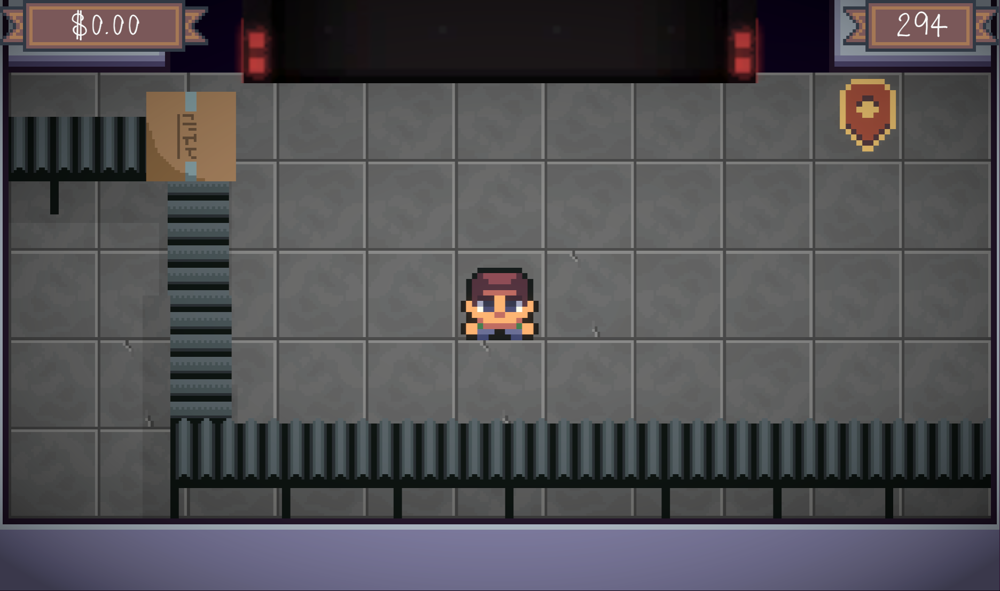

Play Packing on Itch.io
Packing is a cozy, fast-paced, Tetris-inspired puzzle game created for the Summer 2023 Neumont Game Jam. Built in Unity and developed in collaboration with Makenzie Buchenroth, the game challenges players to efficiently fit various items into a suitcase as quickly as possible. It’s a fun, vibrant twist on classic packing puzzles.